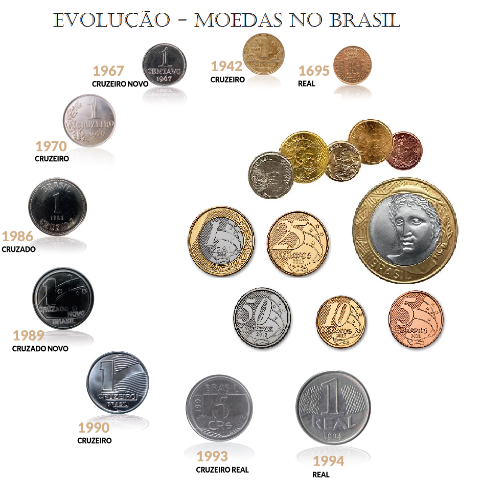

1. Origens da Numismática
A história da numismática está intimamente ligada à história das moedas, que surgiram no final do século VII a.C. na Lídia, uma região da Ásia Menor (atualmente na Turquia). O rei Creso, conhecido por sua riqueza, foi o responsável pela criação das primeiras moedas metálicas padronizadas, feitas de uma mistura de ouro e prata, chamadas de "electrum". Antes disso, o comércio era baseado principalmente em trocas diretas, ou seja, escambo, onde bens eram trocados diretamente sem o uso de uma unidade monetária. Com o tempo, as moedas se espalharam pelo mundo, cada uma refletindo as características dos impérios e das civilizações que as emitiram. O uso de moedas como meio de troca transformou-se rapidamente em uma parte essencial da economia, facilitando o comércio, a tributação e a circulação de riquezas.
2. Desenvolvimento da Numismática
Com o surgimento das moedas, o estudo da numismática começou a ganhar forma. Os primeiros numismatas eram, em sua maioria, colecionadores e comerciantes, que procuravam moedas raras ou valiosas. No entanto, a numismática, como campo acadêmico, começou a se estabelecer de forma mais clara entre os séculos XVII e XVIII, com o aumento do interesse por antigas civilizações, como a Grécia, Roma, e as dinastias orientais. Durante o Renascimento, o interesse pelas antiguidades e pela cultura clássica ressurgiu. Isso levou ao estudo de moedas antigas, que eram vistas como importantes testemunhos históricos. O filósofo e historiador francês Jean de La Salle (1600-1664), por exemplo, é um dos primeiros a escrever sobre o colecionismo de moedas e a numismática como uma disciplina científica.
3. Importância da Numismática
Além de ser uma forma de colecionismo, a numismática desempenha um papel crucial na arqueologia, história econômica e história social. As moedas oferecem uma janela única para as civilizações passadas, muitas vezes funcionando como testemunhos materiais dos impérios, reinos e culturas de um determinado período. Através delas, é possível entender a evolução das economias, as relações comerciais, a arte, a política e até as crenças de uma sociedade. Em suma, a história da numismática é a história da moeda e do dinheiro, refletindo não apenas o desenvolvimento econômico, mas também as interações culturais, sociais e políticas ao longo dos séculos. Ela continua sendo uma disciplina fascinante, tanto para estudiosos quanto para colecionadores.
